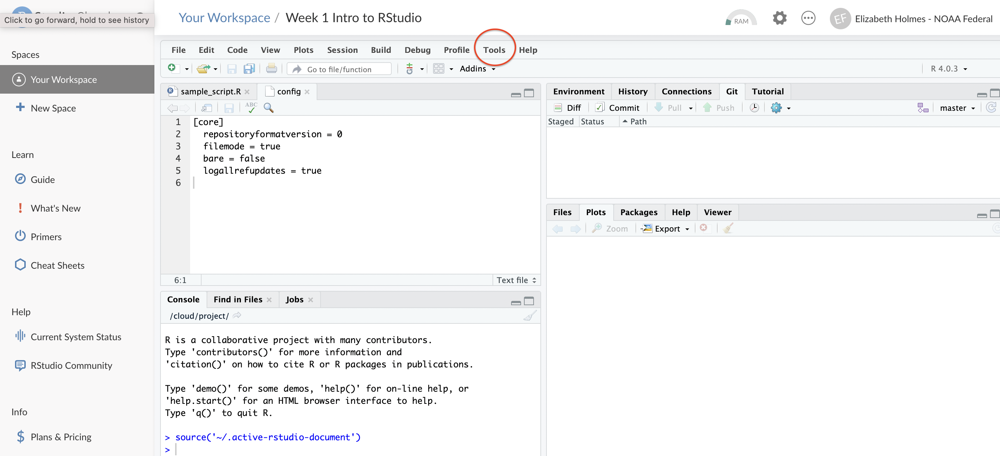
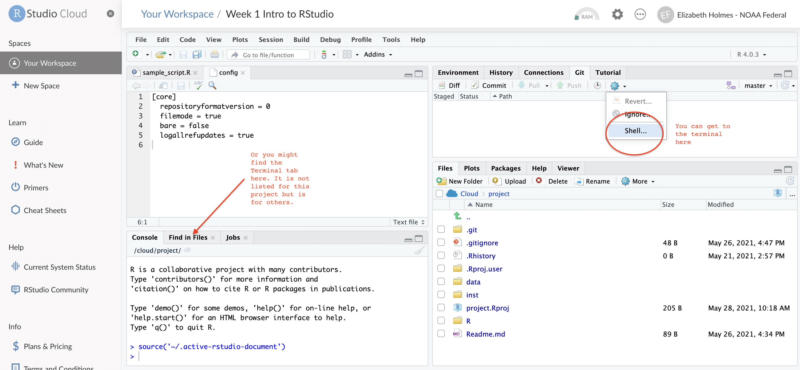

Everything you’ll be using is free. You will need a GitHub (free) account. Sign up here GitHub.
Already have R and RStudio installed? See update R for instructions on updating R to the most recent version. This is not required for the workshop, but it is good to keep R and RStudio updated.
If you use RStudio Cloud you only need a browser. No installing of programs. Sign up for an RStudio Cloud account.
In the class, I am going to use GitHub Desktop, but if you want to use Git from within RStudio Cloud or RStudio Desktop then read these two sections.
Tell RStudio Cloud you want use Git. Open your project then Click Tools > Global Options > Git/SVN (left nav) and check ‘Enable version control for RStudio projects’ {25%}
Click the Terminal tab in the lower left panel or click the blue cog below the Git tab in the upper right panel. {25%}
Type in this with your info
git config --global user.email "<your email>"
git config --global user.name "<your name>"There are a few steps involved. Go slow an deliberately. Nothing is hard.
git.exe isgit.exeWhere is git on my computer? Open a terminal and type
which git. That will show you where it is. Windows, if your
terminal doesn’t recognize the which command, try
dir "git.exe” /s from your user directory. It still
can’t find it. Git is probably not installed.
/usr/bin/git Just paste that
in.New in 2020!
In the newest RStudio, there is browser authentication so you don’t need to deal with personal access tokens. When you try to push the first time, you should see a pop-up window that will allow you to log into GitHub to authenticate. I don’t see this pop-up. Before giving up, try closing and reopening RStudio. Also you need an updated version of RStudio for this to work.
Method using Personal Access Tokens
Go to HappyGitwR to read all about how to pass your credentials (e.g. username and password) to GitHub so you can interact (read push/pull changes) with your GitHub reponsitories.
Here is the simple version
Install these two packages:
install.packages("usethis")
install.packages("gitcreds")Run this code to generate your Personal Access Token (PAT) for your GitHub account. It doesn’t matter what folder you are in when you run this. Just go to the R command line in RStudio within any folder or project. For most people, you can just accept the default scope that usethis selects for you. If you are not one of those people, then you will know what extra boxes to check. Everyone else, just accept the default scopes. Next choose a time limit for your PAT. You can choose “forever” but you might not want to do that. I set up mine for 12 months.
usethis::create_github_token()SAVE the token, that long string of letters!! You need it for the next step.
Next set up R so it knows where this PAT is:
gitcreds_set()If you have an old PAT that you need to replace, it will give you an option for that.
Now pushing and pulling to GitHub should work fine from R (and RStudio).
If you need to make another PAT, because your PAT expired or you messed up the scope, then go here
https://github.com/settings/tokens
to delete the old one before setting up a new one.
Before you start, get a Personal Access Token (PAT) from GitHub. You’ll need this as you GitHub password. GitHub > Profile (far right drop down) > Settings > Developer settings (far right bottom) > Personal Access Token. Generate a token with write access to repo and copy the PAT (very long).
Now that you have your PAT, you are ready to set-up Git from the shell/terminal.
git config --global user.name Your Name
git config --global user.email your.email@email.comgit config --get credential.helper If you are on a PC, you
should see manager and if on a mac,
osxkeychain If not type, Mac:
git config --global credential.helper osxkeychain Windows:
git config --global credential.helper managerNote. Instead of the PC or Mac specific credential managers, you can use the GitHub credential manager
Talk to them. They have their own procedure for this and they install/update R and RStudio all the time (probably).
R
Install the latest R from CRAN. When you restart RStudio, it will use the updated version of R.
Windows users can try using the package
installr (only for Windows). This installr
tutorial is very helpful. Or download from CRAN.
Mac users
RStudio
Open RStudio. Go to “Help” tab. Click “Check for Updates”
Getting your packages to the new R version
If you want to automatically re-install these you can follow these instructions. I do not do this, because I tend to accumulate so many packages just when I am trying out stuff and I use my R updates to clean-up. I have a small list of packages that I install on a fresh R install. But if you want to just install all the packages you have installed, here is how you could do that.
tmp <- installed.packages()
installedpkgs <- as.vector(tmp[is.na(tmp[,"Priority"]), 1])
save(installedpkgs, file="installed_old.rda")Once you have the new R installed, open RStudio (or R) and navigate
to where you have that installed_old.rda file.
load("installed_old.rda")
tmp <- installed.packages()
installedpkgs.new <- as.vector(tmp[is.na(tmp[,"Priority"]), 1])
missing <- setdiff(installedpkgs, installedpkgs.new)
if(length(missing)!=0) install.packages(missing)
update.packages()Does R say, “package not available” and you know it is? Try a different mirror.
So what do I do? I run this code
install.packages("tidyverse")
install.packages(c("knitr", "rmarkdown", "markdown"))
install.packages(c("kableExtra", "gridExtra", "raster", "sp"))I say “no” to install from binary (unless for some reason I need the
very latest version, which I never do). That gets me 75% of the way and
then I install the other stuff as I need it. Notes 1) I don’t
write scripts with library() buried deep in the script.
Those calls always go at the top so they break early if I am running
something. 2) I tend to bundle my code into packages with a DESCRIPTION
file with all the dependencies and suggests. When I install that with
install.packages(..., dependencies=TRUE) it will install
all the packages required or used in the vignettes and examples. 3) I
prefer to use :: when using functions from other packages,
like forecast::forecast(). Exception is
ggplot2 stuff. Otherwise I spend forever trying to
figure what package a function came from.
Updating packages
To update packages, Go to “Tools” tab and then “Check for Package Updates”.